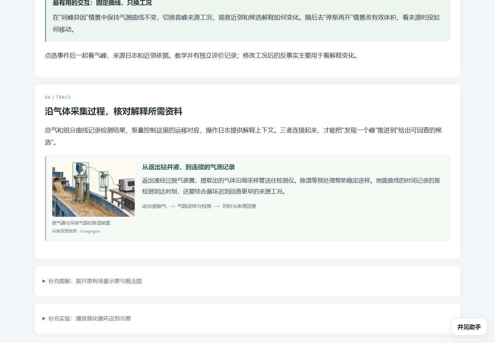
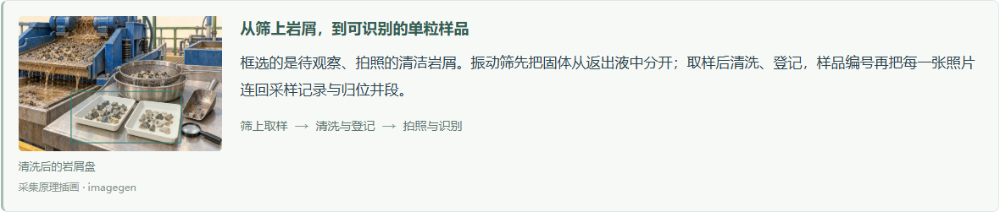
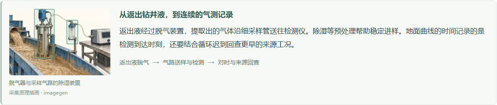
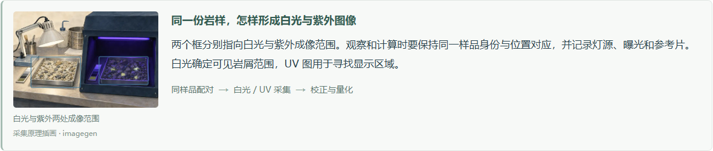
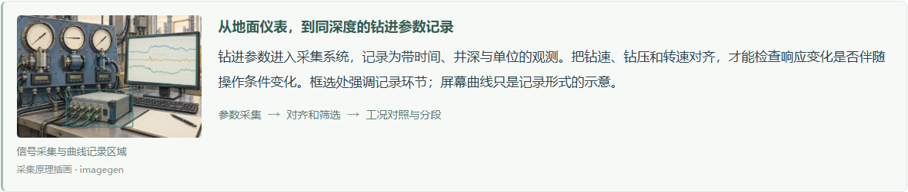
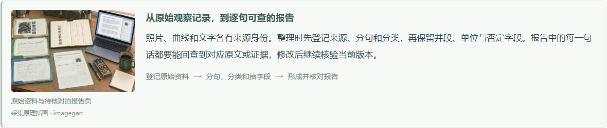

当前页面中的比例

门户1.8.2-preview · 录井五例1.5.2 · 其余十二例1.0.1保持
每例只展示与本例有关的固定小图，桌面约240×160像素；文字在旁边，手机先读文字再看图。半透明框不带编号圆点、粗箭头或悬浮牌。方法总览采用紧凑关系图，主要空间保留给专业解释、真实观测、交互图表和计算。
打开首页 · 打开气测案例 · 当前文件与证据核对 · 生成提示词 · 最终资产清单

| 范围 | 通过 | 失败 |
|---|---|---|
| browser-standalone | 58 | 0 |
| browser-original | 46 | 0 |
| browser-enhanced | 22 | 0 |
| browser-legacy | 21 | 0 |
| browser-restart | 17 | 0 |
164项为本轮实际浏览器检查，48项算法与源码核对单独记录。五例完成原站目录导入、沙箱计算、真实JSON下载和刷新重跑；累计17例保存后，实际关闭重开专用Chrome，五例再次运行。旧1.5.1五例在增强门户显示新版小图，运行版本保留。
390px与768px为桌面Chrome模拟视口；未验证实体手机、Firefox/WebKit、新语音与在线模型调用。此前大图布局的中间记录以before-compact命名保留，不计入当前通过数。




